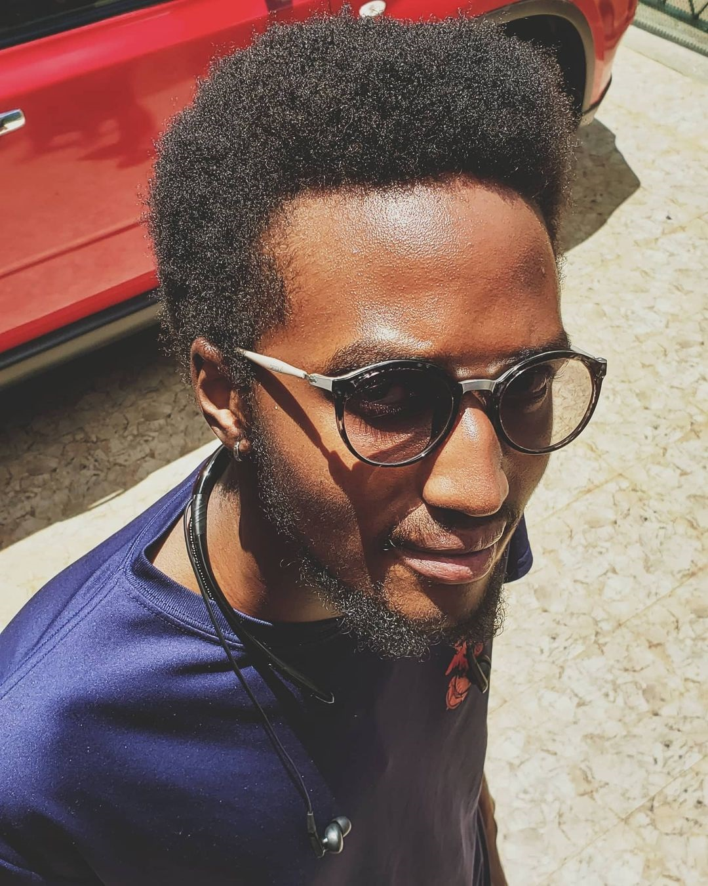

My Name is Bedan is Bedan Maison Takona. I'm a 3rd year Computer Science student in Strathmore University.I finished my high school education in Pioneer High School in 2017.
I happened to be a really good basketball player and I currently play for Baraka Xtreme which is team in the Nairobi Basketball Association League.
decided to take this course for a number of reasons. First of all, I really enjoy coding and thats also why I chose to do computer science. Also I,d like to sharpen my coding skills as I aspire to be an excellent programmer. Lastly, I'd like to learn on how to work on projects with a team.
